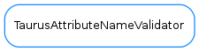

TaurusAttributeNameValidator¶

-
class
TaurusAttributeNameValidator[source]¶ Bases:
taurus.core.taurusvalidator._TaurusBaseValidatorBase class for Attribute name validators. The namePattern will be composed from URI segments as follows:
<scheme>:[<authority>/]<path>[?<query>][#<fragment>]
Derived classes must provide attributes defining a regexp string for each URI segment (they can be empty strings):
- scheme
- authority
- path
- query
- fragment
Additionally, the namePattern resulting from composing the above segments must contain a named group called “attrname” (normally within the path segment).
-
pattern= '^(?P<scheme>%(scheme)s):((?P<authority>%(authority)s)($|(?=[/#?])))?(?P<path>%(path)s)(\\?(?P<query>%(query)s))?(#(?P<fragment>%(fragment)s))?$'¶